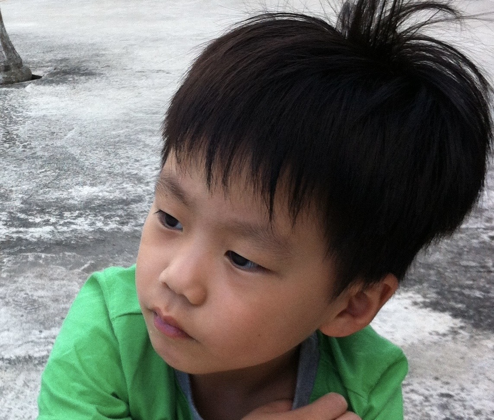

Journey


A STEM-driven student passionate about mathematics, physics, and engineering, with a strong interest in problem-solving, analytical thinking, and building impactful real-world projects. I actively engage in academic competitions and enjoy applying theoretical concepts to challenging, open-ended problems.
Beyond academics, I am also an athlete who values discipline, teamwork, and consistency developed through sports training and competition. I naturally take on leadership roles in group settings, helping organize, coordinate, and motivate teams toward shared goals.

Strong analytical foundation in advanced problem solving.
STEM olympiads, research challenges, and global contests.
Team coordination, MUN, and initiative-driven projects.
Basketball discipline translating into consistency & teamwork.
Founded fundraising club and began leadership experience
MUN Outstanding Diplomacy Award
Expanded STEM competitions & academic development